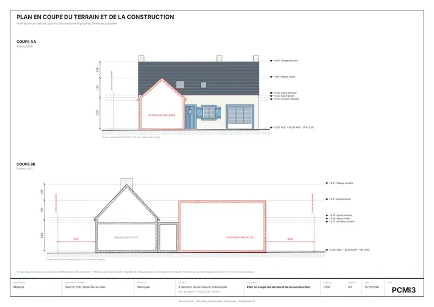
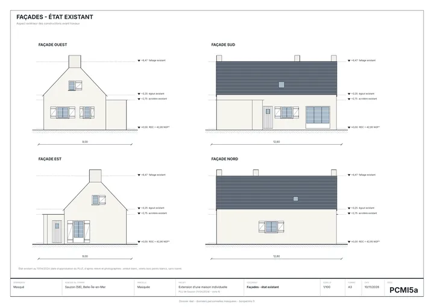
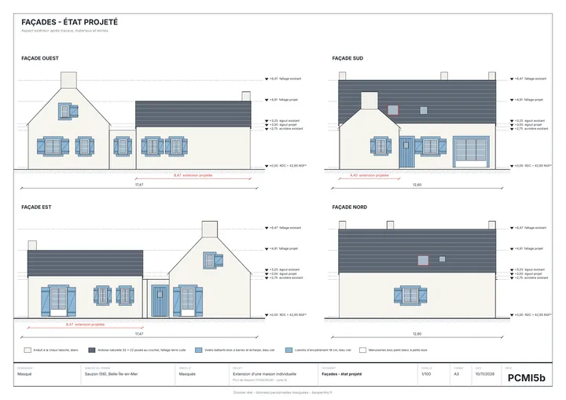
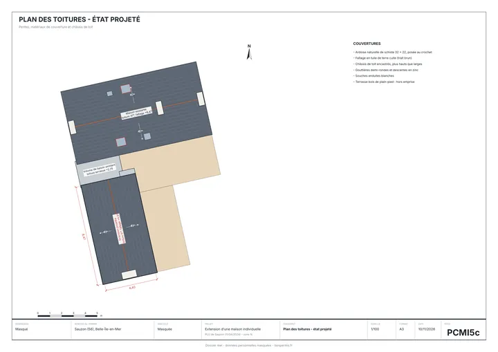
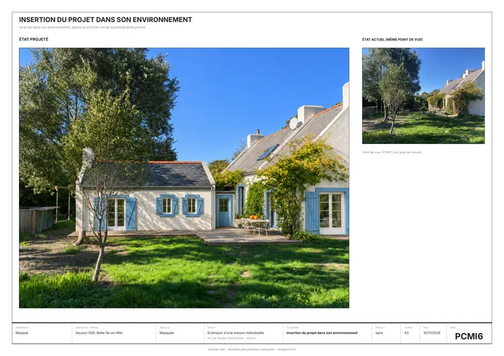
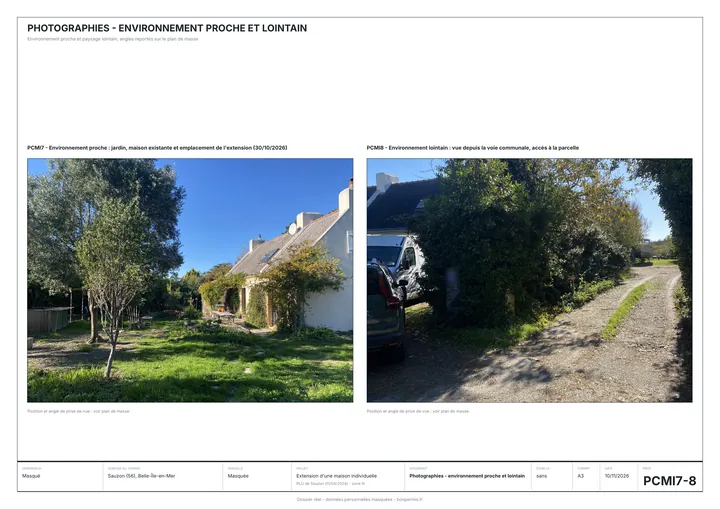

Extension de maison : déclaration ou permis ?
Ça dépend de la surface créée. Jusqu'à 20 m², une déclaration préalable, et jusqu'à 40 m² si votre maison est en zone urbaine. Au-delà, un permis de construire.

Quelle démarche pour votre projet ?
| Votre situation | Ce qu'il faut |
|---|---|
| De 5 à 20 m² créés | Déclaration préalable |
| De 20 à 40 m² créés, en zone urbaine | Déclaration préalable |
| Au-delà | Permis de construire |
| Maison de plus de 150 m² après travaux | Permis de construire, signé par un architecte |
La zone urbaine est fixée par le plan local d'urbanisme, les règles de votre commune : on la vérifie avec votre adresse avant de dessiner, avec les distances, la hauteur et l'emprise autorisées. Si le projet ne passe pas tel quel, on vous le dit avant de commencer. Entre 20 et 40 m², la déclaration ne suffit que si la maison reste sous 150 m² une fois agrandie. Sinon, c'est un permis signé par un architecte.
Règles générales du code de l'urbanisme. Le plan local d'urbanisme de votre commune peut être plus strict : on le vérifie avec votre adresse avant de dessiner. Sources : Déclaration préalable de travaux · Permis de construire · Taxe d'aménagement · Travaux à déclarer aux impôts. Mis à jour le 10 novembre 2026.
Ce qu'on vous demandera
Votre projet, sous la forme que vous avez : un croquis à main levée suffit. Vous l'envoyez après le paiement, depuis votre téléphone, avec un guide pas à pas.
- Le projetUn croquis ou une description : surface, longueur et largeur, hauteur, type de toit, ouvertures, matériaux et couleurs
- Les mesuresLa largeur de la façade concernée et la distance aux limites du terrain
- Les photosQuatre photos : ce qui va changer, la maison vue de la rue, le terrain vu de loin, les abords proches
Ce qu'on fait pour vous
D'abord, on lit le plan local d'urbanisme de votre commune : distances aux voisins, hauteur, emprise, clôtures, couleurs. Si votre projet ne passe pas tel quel, on vous le dit avant de commencer, avec la règle qui bloque : vous décidez de ce que vous changez. Ensuite on trace à l'échelle, d'après votre croquis et vos mesures, tous les plans demandés par la mairie, et on remplit le formulaire officiel. Une deuxième personne relit tout. Vous n'avez plus qu'à déposer, ou on dépose pour vous.
- 349 € Déclaration préalable, prête en 48 h
- 490 € Permis de construire, prêt en 5 jours
Un vrai dossier, tel qu'on le livre
Une extension de 31 m² de surface de plancher sur une maison en Bretagne, classée en zone naturelle par le plan local d'urbanisme. Hors zone urbaine, la limite de la déclaration préalable est à 20 m² : il fallait donc un permis de construire.
Le règlement de la commune limitait l'agrandissement à la moitié de l'emprise de la maison, soit 38,28 m². L'extension en fait 37,27. On l'a vérifié avant de dessiner, et le calcul figure sur le plan de masse pour que l'instructeur le retrouve tout de suite. Cliquez sur une planche pour l'ouvrir en grand.







Dossier réel, publié avec l'accord écrit de la propriétaire. Nom, adresse, numéro de parcelle et plan de situation masqués. Le dossier complet contient aussi le plan de situation (PCMI1), la notice (PCMI4) et le formulaire officiel rempli.
Une extension est-elle imposable ?
Oui. Une surface close et couverte de plus de 5 m² est soumise à la taxe d'aménagement, payée une seule fois. En 2026, elle se calcule sur 892 € par m² créé (1 011 € en Île-de-France), multipliés par les taux votés par votre commune et votre département.
Vous devez aussi déclarer les travaux aux impôts dans les 90 jours après leur achèvement, depuis votre espace impots.gouv.fr, rubrique « Biens immobiliers ». Sans déclaration dans ce délai, l'amende est de 150 €, et vous pouvez perdre l'exonération de taxe foncière de deux ans prévue pour les surfaces nouvelles.
Que risque-t-on sans déclaration ?
Construire sans autorisation est un délit. Pendant 6 ans après les travaux, une amende est possible, de 1 200 € à 300 000 € selon le cas.
Le problème ressort surtout à la vente : le notaire relève les surfaces jamais déclarées, et l'acheteur ou sa banque peut demander que ce soit réglé avant de signer. Une régularisation reste possible à tout moment, si la construction respecte les règles actuelles de votre commune.
Ce que contient le dossier
- Le formulaire officiel. Votre identité, l'adresse du terrain, les surfaces avant et après travaux. Une surface mal reportée suffit à changer la démarche.
- Le plan de situation. Il situe le terrain dans la commune. La mairie y vérifie la zone du plan local d'urbanisme et un éventuel secteur protégé.
- Le plan de masse. La maison et l'extension vues d'en haut, cotées, avec les distances aux limites du terrain. C'est la pièce la plus regardée.
- Le plan en coupe. L'extension posée sur le terrain, avec ses hauteurs à l'égout et au faîtage.
- Les façades et les toitures. Avant et après travaux, avec les matériaux et les couleurs.
- L'insertion et les photos. Un photomontage de l'extension dans son environnement, et deux photos du terrain, de près et de loin.
Les erreurs qui font refuser une extension
- Compter la surface habitable au lieu de la surface créée. Les seuils de 20 et 40 m² se regardent à la fois en surface de plancher et en emprise au sol : il suffit que l'une des deux dépasse.
- Oublier le seuil de 150 m². Si la maison dépasse 150 m² une fois agrandie, il faut un permis de construire signé par un architecte, même pour une extension de 25 m².
- Se croire en zone urbaine sans vérifier. Le seuil de 40 m² ne vaut que dans les zones urbaines d'un plan local d'urbanisme. Ailleurs, le permis est exigé dès 20 m².
- Ne pas lire les distances imposées par la commune. Une extension trop près de la limite du terrain ou trop haute est refusée, quelle que soit sa surface.
- Un plan de masse sans cotes. La mairie ne peut pas vérifier l'implantation et réclame la pièce : le délai repart.
Questions fréquentes
Quelle autorisation pour une extension de maison ?
Une déclaration préalable jusqu'à 20 m² créés, et jusqu'à 40 m² si la maison est en zone urbaine d'un plan local d'urbanisme. Au-delà, un permis de construire. En dessous de 5 m², aucune démarche en général.
Est-ce qu'une extension de 20 m² nécessite un permis de construire ?
Non. Jusqu'à 20 m² créés, une déclaration préalable suffit, partout en France. Le permis devient obligatoire au-delà de 20 m², ou au-delà de 40 m² en zone urbaine.
Peut-on faire une extension de 40 m² sans permis de construire ?
Oui, avec une déclaration préalable, à deux conditions : la maison est en zone urbaine d'un plan local d'urbanisme, et elle ne dépasse pas 150 m² une fois agrandie.
Faut-il un architecte pour une extension ?
Seulement si la maison dépasse 150 m² après travaux et que l'extension demande un permis de construire. En dessous, vous pouvez déposer le dossier sans architecte.
Une extension est-elle imposable ?
Oui : taxe d'aménagement à la construction, puis hausse de la taxe foncière. Les travaux se déclarent aux impôts dans les 90 jours après leur achèvement.
Quel risque si une extension n'est pas déclarée ?
C'est un délit. Pendant 6 ans après les travaux, une amende est possible, de 1 200 € à 300 000 € selon le cas. À la vente, le notaire peut relever le problème et l'acheteur demander une régularisation avant de signer.
Est-il possible de régulariser une extension sans permis de construire ?
Oui, si l'extension respecte les règles actuelles de votre commune. On dépose alors le dossier qui aurait dû l'être, déclaration préalable ou permis selon la surface.
Quel est le délai de réponse de la mairie ?
Un mois pour une déclaration préalable, deux mois pour un permis de construire de maison individuelle, à partir d'un dossier complet. Comptez en général un mois de plus en secteur protégé.
Que faire une fois l'accord obtenu ?
Afficher l'autorisation sur un panneau de plus de 80 cm, visible de la rue, pendant tout le chantier. Les voisins ont deux mois à partir de l'affichage pour contester. L'autorisation est valable 3 ans.
Si la mairie dit non à cause de nous, on reprend tout, sans frais.
Un refus ou une pièce manquante à cause d'une erreur dans le dossier ? On corrige et on redépose, sans rien vous facturer.